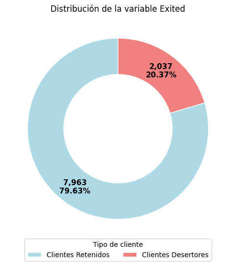
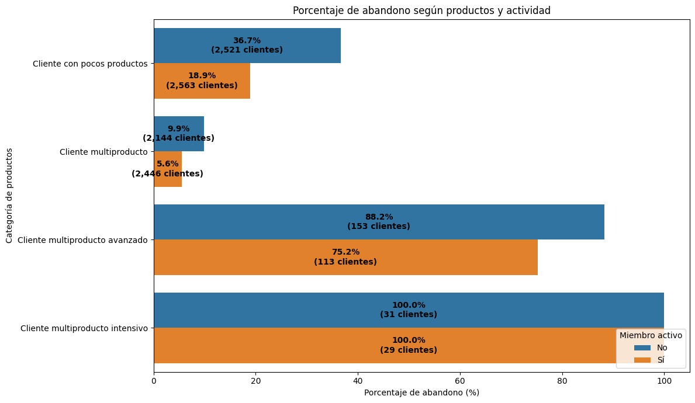

Bank Customer Churn Prediction
Análisis de la deserción (churn) de clientes de un banco a partir de un conjunto de datos de 10.000 clientes, con el objetivo de identificar qué características se asocian a que un cliente abandone la entidad y proponer estrategias de retención basadas en evidencia.
Problema
El banco necesita entender qué factores están asociados a que un cliente decida abandonar la entidad, para poder anticiparse y diseñar estrategias de retención dirigidas a los segmentos con mayor riesgo.
Objetivo
Identificar las principales características y factores asociados a la deserción de clientes (churn), respondiendo preguntas concretas sobre edad, género, país, saldo, actividad, tarjeta de crédito, score crediticio y número de productos contratados.
Metodología
Carga del dataset desde Kaggle vía KaggleHub → inspección y limpieza de los datos →
segmentación de clientes por categorías (edad, saldo, score crediticio, número de productos, actividad) →
cálculo de tasas de deserción por segmento → síntesis de hallazgos y estrategias de retención.
Key Findings
Visualizaciones
{kind=link}

{kind=link}

Conclusiones
De los 10.000 clientes analizados, 2.037 abandonaron el banco (20,37%), lo que significa que aproximadamente 1 de cada 5 clientes desertó. Uno de los hallazgos más relevantes fue el peso de la actividad del cliente: los clientes inactivos presentan una tasa de abandono considerablemente mayor que los activos. La combinación de múltiples productos contratados junto con inactividad es la condición con mayor riesgo de abandono observada en todo el análisis.
A partir de estos resultados, el proyecto propone estrategias de retención centradas en reactivar clientes inactivos (campañas y beneficios personalizados) y en dar seguimiento prioritario a los clientes multiproducto que muestran señales de baja actividad, antes de que la falta de interacción se convierta en abandono.
Abre el notebook completo (Jupyter, exportado a HTML) en una pestaña nueva — código, tablas y las 3 visualizaciones originales del análisis, aislado del resto del sitio.